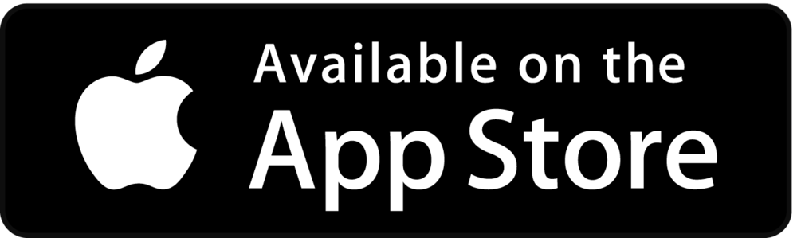

Join In On the
Fitness Today



Join In On the
Fitness Today
The world is filled with many people that care about health and wellness.
By focusing on exercise, nutrition, and wellness, we hope that Foxery encourages users to share what they do to be healthy, while also learning what other people are doing to optimize their health and performance metrics. We believe that gathering insights from friends, coaches, influencers, athletes and other health enthusiasts, will promote a
continuous search for each individuals best approach to living a healthy life.
Sharing expertise and insights from ones own health practices generates a comfortable setting to share everything one does to be healthy. In the process, users should realize that they are helping to create the ultimate knowledge economy involving exercise, nutrition and
wellness.